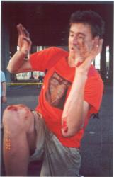
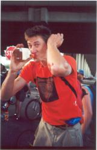

|
Dead Baby Bikes hosts a downhill race in Seattle every year. Start
high, finish low, watch out for traffic, avoid death.
Big B. and Silken Thomas rode it in 2002.
Big B. wiped pretty hard, landing flat on his back and leaving a
little bit of himself in Seattle.
The crash made the C.H.U.N.K. riders lose the
pack. They got lost, were kicked off of the freeway bridge by a
cop, and finished DFL. This was a great disappointment to another
racer, who was aiming for that distinction by riding a tiny kid's bike.
|

|